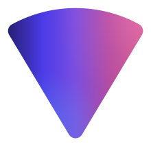

Handsel
Tools built for one person, kept in public.
T1 · wordmark in the text gradient, paper, wash, grain

Six pieces of one thing.
A brand that stays itself across a hero, a story card, a Slack avatar and a printed poster, and still has room to move.
T2 · night, gradient headline, white mark
Handsel
Tools built for one person, kept in public.
Readme banner · flat, no glass, no grain
T3 · flat-safe README banner on mist
HandselReadme header
ColdRead
Turns a script into something you can actually read aloud at a microphone. Built because every teleprompter I tried was designed for news anchors.
python135 commits
T4 · Direction A glass card, the mark in ink
Handsel
Handsel
T5 · lockups: stacked and horizontal, flow, ink, white

H
T6 · avatar and app-icon units